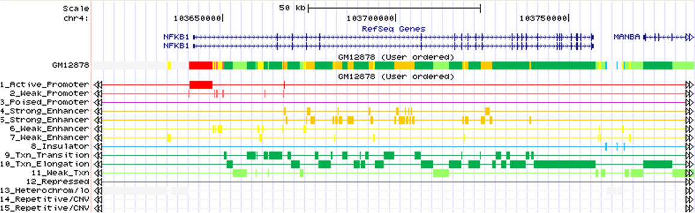

ChromHMM: Chromatin state discovery and
characterization

ChromHMM is software for learning and characterizing chromatin states.
ChromHMM can integrate multiple chromatin datasets such as ChIP-seq data
of various histone modifications to discover de novo the major
re-occuring combinatorial and spatial patterns of marks. ChromHMM is
based on a multivariate Hidden Markov Model that explicitly models the
presence or absence of each chromatin mark. The resulting model can then
be used to systematically annotate a genome in one or more cell types.
By automatically computing state enrichments for large-scale functional
and annotation datasets ChromHMM facilitates the biological
characterization of each state. ChromHMM also produces files with
genome-wide maps of chromatin state annotations that can be directly
visualized in a genome browser.
ChromHMM software
v1.25 (version log)
ChromHMM manual
Quick instructions on running ChromHMM:
1. Install Java 1.7 or later if not already installed.
2. Unzip the file ChromHMM.zip
3. To try out ChromHMM learning a 10-state model on the sample data
enter from a command line in the directory with the ChromHMM.jar file the command:
java -mx1600M -jar ChromHMM.jar LearnModel SAMPLEDATA_HG18 OUTPUTSAMPLE 10 hg18
After termination in ~5-10 minutes a file in OUTPUTSAMPLE/webpage_10.html will be created showing
output images and linking to all the output files created. If a web browser is found on the
computer the webpage will automatically be opened in it.
In general binarized input for the LearnModel command can be generated
by first running the BinarizeBed command on bed files with coordinates of aligned reads or the BinarizeBam command on
bam files with the coordinates of aligned reads.
The ChromHMM software is described in:
Ernst J, Kellis M.
ChromHMM: automating chromatin-state discovery and characterization. Nature Methods,
9:215-216, 2012.
A protocols paper on using ChromHMM is available here:
Ernst J, Kellis M.
Chromatin-state discovery and genome annotation with ChromHMM.
Nature Protocols, 12:2478-2492, 2017.
Here are links to some existing ChromHMM annotations in hg19 available for 127 Reference Epigenomes (Roadmap Epigenomics),
9-ENCODE cell types (from Ernst et al, Nature 2011), and
6-ENCODE cell types (from ENCODE Integrative Analysis).
A liftover of the hg19 annotations to hg38 for the 127 Reference Epigenomes (Roadmap Epigenomics) is available here.
ChromHMM annotations based on a full stack model of the Roadmap Epigenomics
data providing a universal chromatin state annotation of the human genome is described in:
Vu H, Ernst J.
Universal annotation of the human genome through integration of over a thousand epigenomic datasets.
Genome Biology, 23:9, 2022.
and an analogous annotations for mouse based on ENCODE data is also available and
described in:
Vu H, Ernst J.
Universal chromatin state annotation of the mouse genome.
Genome Biology, 24:153, 2023.
Contact Jason Ernst (jason.ernst at ucla dot edu) with any questions,
comments, or bug reports.
Subscribe to a mailing
list for announcements of new versions
ChromHMM is released under a GPL 3 license.
ChromHMM source code is available on GitHub here.
Funding for ChromHMM provided by NSF Postdoctoral Fellowship
0905968 to
JE and grants from the National Institutes of Health (NIH
1-RC1-HG005334
and NIH 1 U54 HG004570).